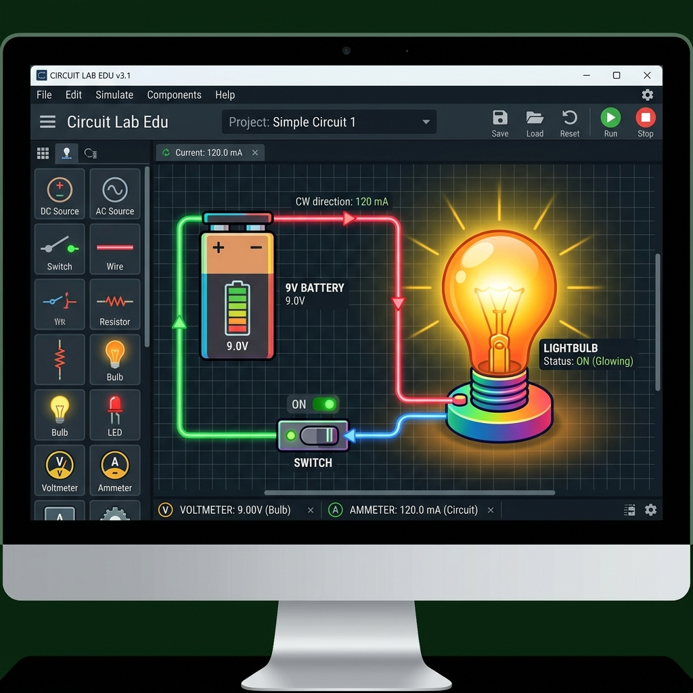

What This Stage Was About
In this stage, my student used the PhET Circuit Construction Kit to explore circuits in a digital space before building anything physically. This simulation let him drag, drop, connect, and test components instantly, which helped him see how electricity behaves without worrying about wires, batteries, or incorrect connections.
The PhET environment gave him the freedom to experiment safely — trying out switches, bulbs, resistors, and different circuit layouts. Because the simulator responds immediately, he could make predictions, test them, and revise his thinking on the spot. This built a strong conceptual foundation before moving into hands‑on building.
He continued using the digital notebook to take notes, sketch circuit ideas, and record predictions and results.
Lesson Plan
Digital Tools We Used
PhET Circuit Construction Kit PICRAT: Active–Transformation
Used to build and test virtual circuits.
Digital Notebook PICRAT: Passive–Replacement
Used to record observations and predictions.
Student Artifacts

What We Did
- built simple and complex circuits
- tested switches, resistors, and LEDs
- made predictions before running simulations
- compared digital results with real‑world expectations
My Reflection
He used the simulation to test ideas quickly and confidently.
Student Reflection
“I liked trying things in the simulator because I could see what would happen right away.”
ISTE Standards Addressed
1.1 Empowered Learner
The student used the PhET simulation to explore circuits at their own pace—adding components, adjusting variables, and testing ideas—building confidence and independence in using digital tools to learn scientific concepts.
1.4 Innovative Designer
The student designed and modified circuits within the simulation, using trial‑and‑error, iteration, and troubleshooting to solve problems such as why a bulb wouldn’t light or how to fix a broken series string.
1.5 Computational Thinker
The student analyzed how each component affected the circuit, broke problems into smaller parts, and used the simulation to model system behavior and test predictions about current flow, brightness, and circuit structure.
1.6 Creative Communicator
The student communicated their understanding by explaining circuit behavior using diagrams, screenshots, and verbal reasoning, clearly describing how their design choices affected the outcome.